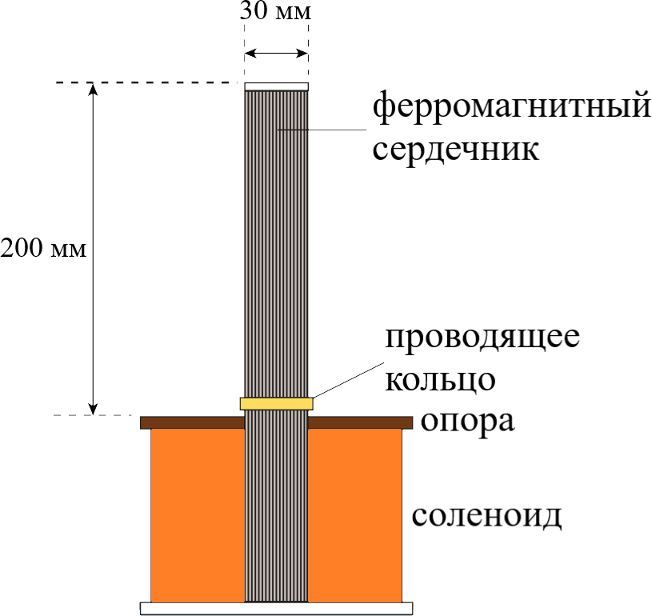

Y23 (2023) — English translation
To demonstrate the law of electromagnetic induction, a device called a Thomson induction accelerator is very often used. As shown in the figure, the accelerator is a long vertical ferromagnetic core, the lower end of which is placed in a solenoid. If you put a small ring of conductive non-magnetic material on the core and apply a powerful alternating current to the solenoid, the ring will fly up. If the current strength is increased slowly, the ring will soon come off the support and begin to levitate. This occurs due to the interaction of the solenoid's magnetic field with eddy currents (Foucault currents) generated in the ring. In this problem we study in detail the induction accelerator and the behavior of the ring. In future calculations, consider the height of the upper end of the core above the support (the initial position of the ring) to be equal to $H=200~\text{мм}$, the diameter of the core and ring to be $d=30~\text{мм}$. The mass of the ring is $m=30~\text{г}$, its inductance is $L=1{.}0~\text{мГн}$, and its resistance is $R=1.0~\text{Ом}$. Cyclic frequency of current used $\omega=100\pi~\text{рад}/\text{с}$, acceleration due to gravity $g=9{.}8~\text{м}/\text{с}^2$.
To demonstrate the law of electromagnetic induction, a device called a Thomson induction accelerator is very often used. As shown in the figure, the accelerator is a long vertical ferromagnetic core, the lower end of which is placed in a solenoid. If you put a small ring of conductive non-magnetic material on the core and apply a powerful alternating current to the solenoid, the ring will fly up. If the current strength is increased slowly, the ring will soon come off the support and begin to levitate. This occurs due to the interaction of the solenoid's magnetic field with eddy currents (Foucault currents) generated in the ring. In this problem we study in detail the induction accelerator and the behavior of the ring. In future calculations, consider the height of the upper end of the core above the support (initial position of the ring) to be $H=200~\text{мм}$, the diameter of the core and ring – $d=30~\text{мм}$. The mass of the ring is $m=30~\text{г}$, its inductance is $L=1{.}0~\text{мГн}$, its resistance is $R=1.0~\text{Ом}$. Cyclic frequency of current used $\omega=100\pi~\text{рад}/\text{с}$, free fall acceleration $g=9{.}8~\text{м}/\text{с}^2$.

In all points of the problem, consider that the induction component $B_z$ of the magnetic field inside the core depends only on the coordinate $z$. Also, everywhere except part C, consider that the induced emf in the ring is caused only by the vortex electric field.
Let's consider the movement of the ring along the core. Let us introduce cylindrical coordinates by directing the axis $z$ vertically upward along the axis of symmetry of the core so that the support corresponds to the coordinate $z=0$. Let the axial component of the magnetic field be equal to $B_z(t)$ inside the core, and let the radial component of the magnetic field be equal to $B_\rho(t)$ outside the core. When the magnetic field changes in the core, Foucault currents arise in the ring, which interact with the radial component of the magnetic field. For the positive direction of currents, take the direction of the round counterclockwise when viewed from above.
Let now the field components be functions not only of time $t$, but also of the coordinates $z$. However, we will assume that the characteristic scale on which these functions change noticeably is much larger than the scale of “fast” ring oscillations. Thus, $B_z(z,t)=B_{0z}(z)\cos\omega t$ and $B_\rho(z,t)=B_{0\rho}(z)\cos\omega t$.
Since the frequency $\omega$ of the alternating current is also noticeably greater than the characteristic time scale on which the ring moves, we can assume that the force $F_z(z)$, averaged over the period, acts on the ring.
Calculating the magnetic field components in a real induction accelerator is a rather complicated task, so in what follows we will assume that $B_{0z}(z)$ decreases linearly from a certain value $B_0$ at $z=0$ to zero at $z=H$. There is no field above the upper edge of the core.
These quantities can be related to each other.
In this part, we will take into account the contribution to the EMF caused by the change in the magnetic flux in the ring due to its movement along the $z$ axis. Let's assume that we turned on the magnetic field sharply, and the ring flew up to a height of $h_\mathrm m=16~см$. Subsequently, the ring moves periodically along the core, slowly losing energy due to dissipation caused by this contribution to the emf. Let's explore this movement. Let the ring move at point $z$ with an average speed $v_z$.
Due to the losses described above, as a result of each oscillation, the amplitude of oscillations of the ring $A$ will decrease by a certain amount $\Delta A\ll A$. Let us introduce the logarithmic damping decrement as $\delta=\Delta A/A$.
Now let’s apply just enough current to the solenoid so that the ring stops pressing on the support. Let's put another similar ring on top. Contrary to intuition, a pair of rings will rise above the support to a certain height. Let's explore this phenomenon in more detail.
The Thomson induction accelerator can be considered not only as an interesting demonstration model, but also as a completely working converter of electrical energy into mechanical energy. Let's try to find out how effective it is. The setup parameters for the numerical calculation are the same as in the introduction; $h=18~см$. Consider that when the field is turned on abruptly, the ring can rise above the upper edge of the core.
Source: https://pho.rs/p/3449